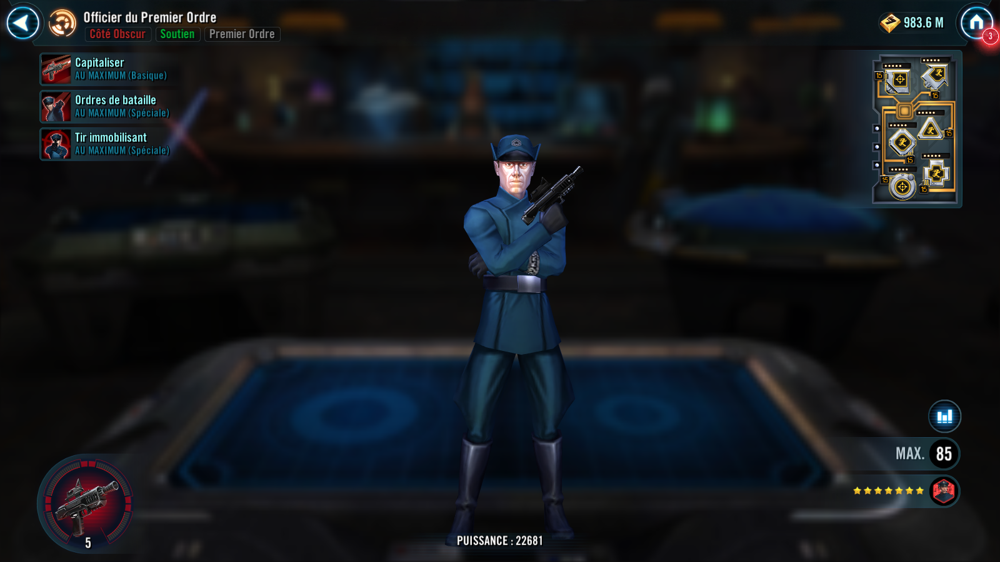
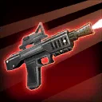
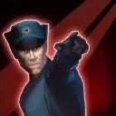
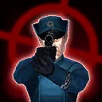

First Order Officer
First Order support that grants Advantage and can manipulate both ally and enemy Turn Meters
First Order support that grants Advantage and can manipulate both ally and enemy Turn Meters


Deal Physical damage to target enemy. This attack has +20% Critical Damage. If any ally has Advantage, this attack is a guaranteed Critical Hit.

Target other ally gains 100% Turn Meter and Advantage for 2 turns. If that ally is First Order, they also gain Offense Up for 3 turns. Dispel all debuffs from First Order Officer and target ally and grant them both Tenacity Up for 2 turns.

Deal Physical damage to target enemy and remove 50% Turn Meter. If any Turn Meter is removed this way, each ally gains 15% Turn Meter. All First Order allies have their Cooldowns reduced by 1.